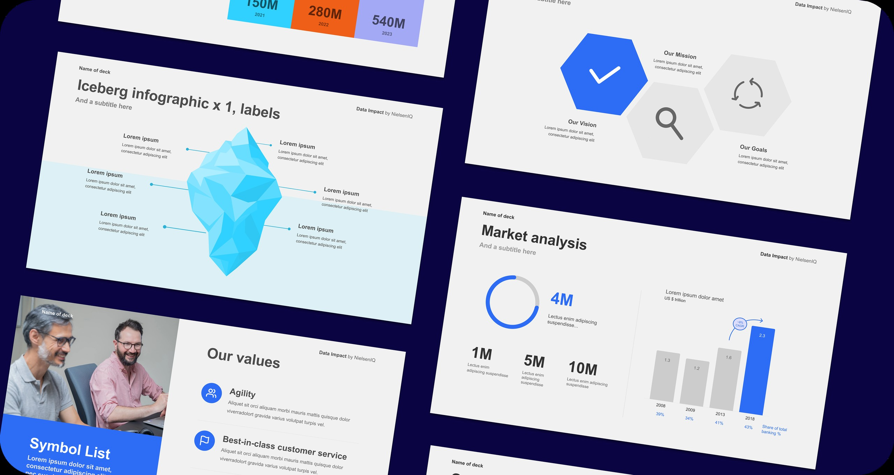
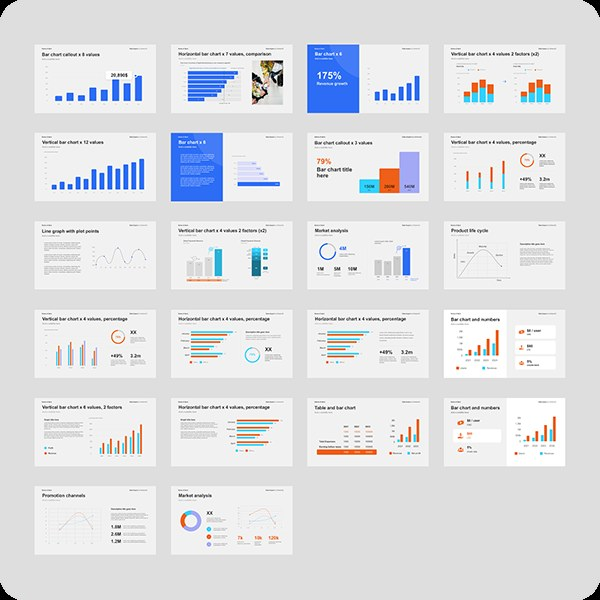
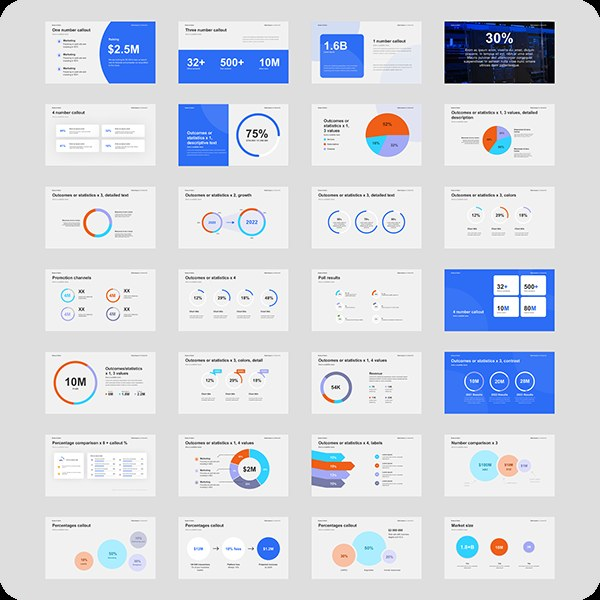
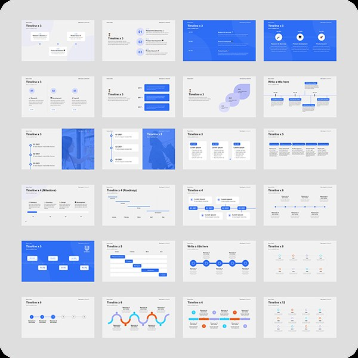

Case study · Templates
NIQ for Digital Commerce: slide templates
A library of 100+ PowerPoint templates that lets teams around the world build polished, on-brand presentations without needing a designer.
- Client
- NIQ for Digital Commerce
- Year
- 2025
- Role
- Project lead & designer
- Tools
- Figma, PowerPoint

The problem
NIQ already had corporate templates, but they weren't built for Digital Commerce (formerly Data Impact). Its content, data visualisation needs and sales conversations are different from NIQ's other products, and forcing it into the standard templates made presentations feel generic.
- The templates didn't fit: teams were stretching them awkwardly or going off-template entirely.
- Nothing tailored existed: no library reflected Digital Commerce's language, KPIs and visual needs.
- Inconsistency grew with the team: as the division scaled globally, one-off design fixes stopped being sustainable.
The challenge: build something new inside NIQ's brand guardrails, but made for a product that needed its own visual identity and presentation logic.
My role
I led the project end to end, alongside one other designer:
- user research with stakeholders across the division to map real, recurring use cases,
- creative direction and the design system,
- designing all 100+ layouts in Figma,
- leading and contributing to the rebuild of every template in PowerPoint,
- defining what stakeholders could edit and what stayed locked,
- making sure the library was easy to navigate and use without design training.
01
The approach
Designing for non-designers
The people using these templates are sales teams, analysts and regional leads, working under time pressure with no brand guidelines open in another window. Every template had to make the right choice the easy choice.
Brand extension
The templates had to stay within NIQ's guidelines without simply adapting existing NIQ slides. Digital Commerce needed layouts for e-commerce data, product performance stories and competitive retail contexts: faithful to NIQ's identity, but purpose-built for a different product and audience.



02
The build
Figma first
Everything was designed in Figma first, setting the type, colour, spacing and icon rules in line with NIQ's parent system before any PowerPoint work began. Figma was our single source of truth and let us iterate quickly before the much slower PowerPoint build.
Rebuilt by hand
Instead of exporting flat images, we rebuilt every template in PowerPoint with native vector elements. That way they scale cleanly, stay editable where they should be, and work reliably across the PowerPoint versions and operating systems used around the world.
Strategic locking
Brand-critical elements (backgrounds, logo positions, colour fields and type hierarchy) are locked so they can't be changed by accident. Editable areas are clearly signposted, so people can customise content confidently without breaking the design.
Outcomes
- Consistency at scale: for the first time, presentations from every region shared one visual identity, with or without a designer.
- Independent teams: no more design requests or waiting for reviews, so fast-moving sales work moved faster.
- Built to grow: new templates can be added using the same system as the business evolves.
- Higher perceived quality: client presentations consistently looked professionally designed, strengthening NIQ's position in competitive conversations.